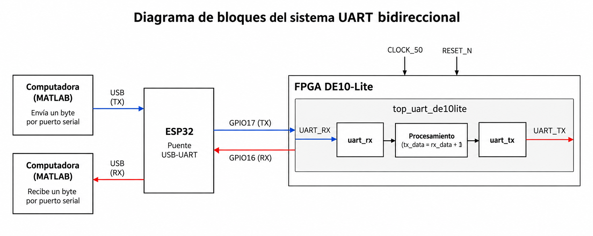
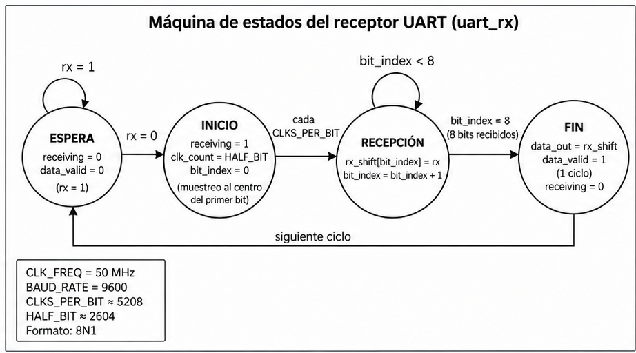
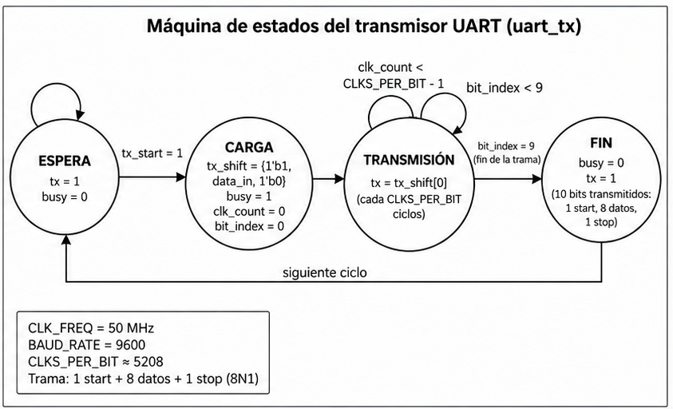

Resumen
En esta práctica diseñamos un sistema de comunicación serial bidireccional entre una computadora y la tarjeta FPGA DE10-Lite mediante el protocolo UART. Para su funcionamiento utilizamos un ESP32 como puente USB–UART y MATLAB para enviar y recibir datos mediante el puerto serial. En la FPGA implementamos los módulos transmisor y receptor UART, junto con una entidad superior que procesa el byte recibido sumándole una unidad antes de transmitir la respuesta. La comunicación se configura a 9600 baudios con formato 8N1 y utiliza el reloj de 50 MHz de la tarjeta.
01 Objetivo
Diseñar e implementar un sistema de comunicación serial bidireccional entre una FPGA DE10-Lite y una computadora mediante el protocolo UART, utilizando MATLAB para enviar y recibir datos y un ESP32 como puente USB–UART. El sistema deberá recibir datos seriales, procesar un byte de ocho bits y transmitir una respuesta a la computadora, utilizando una velocidad de 9600 baudios y formato 8N1.
02 Estado del Arte
Los sistemas digitales utilizan circuitos combinacionales y secuenciales para procesar información y controlar el comportamiento de los dispositivos electrónicos. Mano y Ciletti [1] explican que los circuitos secuenciales utilizan elementos de memoria y lógica de control para producir un comportamiento definido según las entradas y el estado actual. Estos principios permiten desarrollar módulos digitales capaces de recibir, procesar y transmitir información.
La comunicación serial UART permite intercambiar datos entre dispositivos sin compartir una señal de reloj. Para que funcione correctamente, ambos dispositivos deben utilizar la misma velocidad de transmisión y configuración de trama. Wakerly [2] describe los principios de diseño digital y temporización necesarios para comprender este tipo de sistemas. En esta práctica utilizamos el formato 8N1, que contiene ocho bits de datos, ningún bit de paridad y un bit de paro.
Las FPGA permiten implementar sistemas digitales mediante bloques lógicos programables. Chu [3] explica cómo los diseños descritos mediante lenguajes de descripción de hardware pueden implementarse en dispositivos programables. En nuestro caso, utilizamos Verilog para desarrollar los módulos transmisor y receptor UART, además de una entidad superior que conecta ambos módulos y controla el procesamiento de los datos recibidos.
Roth Jr. y John [4] presentan los principios de diseño e integración de sistemas digitales mediante bloques funcionales. En esta práctica, el módulo receptor convierte los datos seriales en un byte paralelo, mientras que el transmisor realiza la operación inversa. La entidad superior utiliza el dato recibido para generar una respuesta, permitiendo comprobar la comunicación entre la computadora y la FPGA.
Finalmente, los dispositivos lógicos programables permiten integrar diferentes funciones digitales en un mismo sistema. Rössler y Höller [6] describen la importancia de estos dispositivos en los sistemas electrónicos actuales. Para esta práctica utilizamos Quartus Prime para integrar y compilar el diseño, un ESP32 como puente USB–UART y MATLAB para enviar datos y recibir las respuestas de la FPGA.
03 Planteamiento del Experimento
Desarrollamos en Verilog los módulos uart_rx y uart_tx, que reciben y transmiten datos por UART. Después los integramos en top_uart_de10lite para que la FPGA DE10-Lite reciba un byte, le sume una unidad y devuelva la respuesta a MATLAB mediante un ESP32.
Diagrama de bloques

MATLAB envía el dato al puerto COM del ESP32. Este lo pasa a uart_rx en la FPGA, donde se procesa y se entrega a uart_tx para regresar el resultado por el mismo puente.
Máquinas de estados UART
Para representar el funcionamiento de los módulos, elaboramos los siguientes diagramas con las etapas principales de recepción y transmisión. Son esquemas funcionales del comportamiento del código, ya que los módulos no declaran estados mediante un registro de FSM.

uart_rx.El receptor espera a que UART_RX cambie a 0 para detectar el inicio de la trama. Después cuenta los ciclos del reloj, captura los ocho bits y activa data_valid durante un ciclo para indicar que el byte está listo.

uart_tx.Cuando recibe tx_start, el transmisor carga una trama con un bit de inicio, ocho bits de datos y un bit de paro. Envía un bit a la vez por UART_TX y libera la señal busy al terminar.
Conexiones y programación del ESP32
Programamos el ESP32 desde Arduino IDE como puente USB–UART. Conectamos las líneas de forma cruzada, es decir, la salida TX de cada equipo llega a la entrada RX del otro:
| ESP32 | FPGA DE10-Lite |
|---|---|
| GPIO17 (TX) | UART_RX (entrada) |
| GPIO16 (RX) | UART_TX (salida) |
| GND | GND (tierra común) |
La computadora se comunica con el ESP32 mediante USB. El programa del ESP32 reenvía los bytes en ambos sentidos, sin aplicar la suma, ya que esa operación se realiza dentro de la FPGA.
Configuración en Quartus y Pin Planner
En Quartus Prime establecimos top_uart_de10lite como entidad superior. En Pin Planner asignamos CLOCK_50 y RESET_N a las entradas correspondientes de la tarjeta, UART_RX al GPIO de entrada y UART_TX al GPIO de salida. La asignación física debe coincidir con los cables TX/RX cruzados que conectamos al ESP32.
La FPGA trabaja con un reloj de 50 MHz y configuramos la comunicación a 9600 baudios, formato 8N1. Calculamos los ciclos necesarios para la duración de un bit:
Finalmente, en el módulo superior usamos tx_data <= rx_data + 8'd1 cuando llega un byte válido y el transmisor está libre. Como el dato es de ocho bits, si llega 255 el valor calculado vuelve a 0. Con MATLAB podemos enviar el dato y comparar la respuesta recibida con la esperada.
04 Casos de Estudio o Pruebas
Sección pendiente de completar en el reporte original.
05 Análisis de Resultados
Sección pendiente de completar en el reporte original.
06 Conclusiones
En esta práctica diseñamos un sistema de comunicación serial bidireccional entre una computadora y la FPGA DE10-Lite utilizando un ESP32 como puente USB–UART. El sistema integra los módulos transmisor y receptor UART con una entidad superior que procesa el byte recibido y transmite una respuesta incrementada en una unidad. También se estableció una velocidad de 9600 baudios y el formato 8N1 para la comunicación.
La integración de MATLAB, el ESP32 y la FPGA permite comprender el intercambio de datos entre hardware y software, así como la importancia de configurar correctamente la velocidad de transmisión y las conexiones de las señales TX y RX. Para completar la validación del sistema es necesario realizar las pruebas de comunicación y comprobar que los datos recibidos correspondan con las respuestas esperadas.
Bibliografía
- M. M. R. Mano and M. D. Ciletti, Digital Design, 6th ed. Pearson, 2018.
- J. F. Wakerly, Digital Design: Principles and Practices, 5th ed. Pearson, 2018.
- P. P. Chu, FPGA Prototyping by VHDL Examples: Xilinx Spartan-3 Version. Wiley, 2008.
- C. H. Roth Jr. and L. K. John, Digital Systems Design Using VHDL, 3rd ed. Cengage Learning, 2018.
- D. L. Perry, VHDL: Programming by Example, 4th ed. McGraw-Hill, 2002.
- P. Rössler and R. Höller, “Programmable logic devices -- key components for today's and tomorrow's electronic-based systems,'' e & i Elektrotechnik und Informationstechnik, vol. 137, pp. 45--51, 2020.